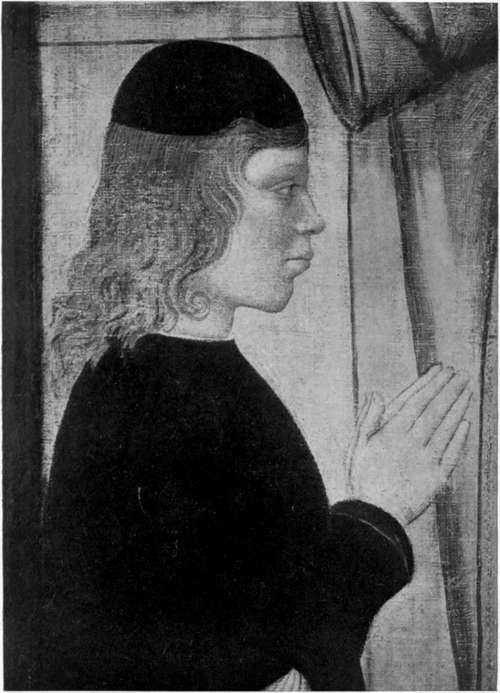

Astorre Manfredi. Continued
Description
This section is from the book "The Life Of Cesare Borgia", by Rafael Sabatini. Also available from Amazon: The Life of Cesare Borgia.
Astorre Manfredi. Continued
On the 26th the Council waited upon Cesare at the Hospital of the Osservanza where he was lodged to tender the oath of fealty. That same evening Astorre himself, attended by a few of his gentlemen, came to the duke.
To this rather sickly and melancholy lad, who had behind him a terrible family history of violence, and to his bastard brother, Gianevangelista, the duke accorded the most gracious welcome. Indeed, so amiable did Astorre find the duke that, although the terms of surrender afforded him perfect liberty to go whither he listed, he chose to accept the invitation Cesare extended to him to remain in the duke's train.
It is eminently probable, however, that the duke's object in keeping the young man about him was prompted by another phase of that policy of his which Macchiavelli was later to formulate into rules of conduct, expedient in a prince:
ASTORRE MANFREDI. (From the portrait by Leonardo Scaletti.)
" In order to preserve a newly acquired State particular attention should be given to two points. In the first place care should be taken entirely to extinguish the family of the ancient sovereign ; in the second, laws should not be changed, nor taxes increased."
Thus Macchiavelli. The second point is all that is excellent; the first is all that is wise cold, horrible, and revolting though it be to our twentieth century notions.
Cesare Borgia, as a matter of fact, hardly went so far as Macchiavelli advises. He practised discrimination. He did not, for instance, seek the lives of Pandolfaccio Malatesta, or of Caterina Sforza-Riario. He saw no danger in their living, no future trouble to/ apprehend from them. The hatred borne them by their subjects was to Cesare a sufficient guarantee that they would not be likely to attempt a return to their -dominions, and so he permitted them to keep their lives. But to have allowed Astorre Manfredi, or even his bastard brother, to live would have been bad policy from the appallingly egotistical point of view which was Cesare's a point of view, remember, which receives Macchiavelli's horribly intellectual, utterly unsentimental, revoltingly practical approval.
So to anticipate a little we see Cesare taking Astorre and Gianevangelista Manfredi to Rome when he returned thither in the following June. A fortnight later on June 26 the formidable amazon of Forli, the Countess Sforza-Riario, was liberated, as we know, from the Castle of Sant' Angelo, and permitted to withdraw to Florence. But the gates of that grim fortress, in opening to allow her to pass out, opened also for the purpose of admitting Astorre and Gianevangelista, upon whom they closed.
All that is known positively of the fate of these unfortunate young men is that they never came forth again alive.
The record in Burchard (June 9, 1502) of Astorre's body having been found in the Tiber with a stone round his neck, suffers in probability from the addition that, " together with it were found the bodies of two young men with their arms tied, a certain woman, and many others"
The dispatch of Giustiniani to the effect that : " It is said that this night were thrown into Tiber and drowned the two lords of Faenza together with their seneschal," was never followed up by any other dispatch confirming the rumour, nor is it confirmed by any dispatch so far discovered from any other ambassador, nor yet does the matter find place in the Chronicles of Faenza.
But that is of secondary importance. The ugliest feature of the case is not the actual assassination of the young men, but the fact that Cesare had pledged himself that Astorre should go free, and yet had kept him by him at first, it would seem, in his train, and later as a prisoner until he put an end to his life. It was an ugly, unscrupulous deed ; but there is no need to exaggerate its heinousness,as is constantly done, upon no better authority than Guicciardini's, who wrote that the murder had been committed " saziata prima la libidine di qualcuno."
Of all the unspeakable calumnies of which the Borgias have been the subject, none is more utterly wanton than this foul exhalation of Guicciardini's lewd invention. Let the shame that must eternally attach to him for it brand also those subsequent writers who repeated and retailed that abominable and utterly unsupported accusation, and more particularly those who have not hesitated to assume that Guicciardini's " qualcuno " was an old man in his seventy second year Pope Alexander VI.
Others a little more merciful, a little more careful of physical possibilities (but no whit less salacious) have taken it that Cesare was intended by the Florentine historian.
But, under one form or another, the lie has spread as only such foulness can spread. It has become woven into the warp of history ; it has grown to be one of those " facts " which are unquestioningly accepted, but it stands upon no better foundation than the frequent repetition which a charge so monstrous could not escape. Its source is not a contemporary one. It is first mentioned by Guicciardini; and there is no logical conclusion to be formed other than that Guicciardini invented it. Another story which owes its existence mainly, and its particulars almost entirely, to Guicciardini's libellous pen the story of the death of Alexander VI, which in its place shall be examined provoked the righteous anger of Voltaire. Atheist and violent anti clerical though he was, the story's obvious falseness so revolted him that he penned his formidable indictment in which he branded Guicciardini as a liar who had deceived posterity that he might vent his hatred of the Borgias. Better cause still was there in this matter of Astorre Manfredi for Voltaire's indignation, as there is for the indignation of all conscientious seekers after truth.
Continue to:
- prev: Chapter VIII. Astorre Manfredi
- Table of Contents
- next: Chapter IX. Castel Bolognese And Piombino